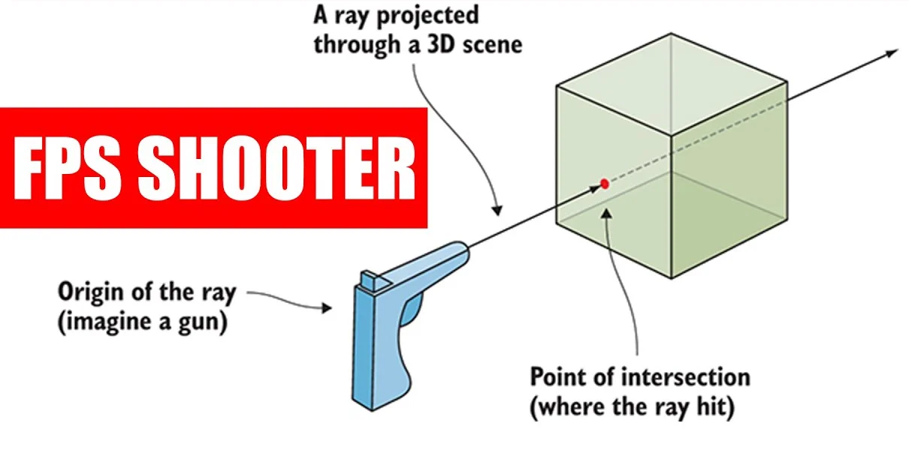
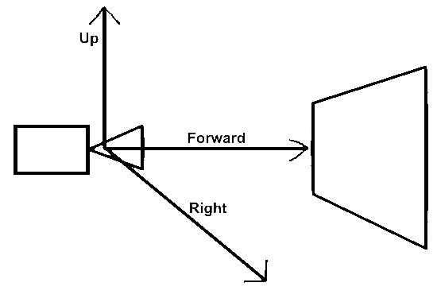

Raytracing in one weekend in C++
GitHub Repository
Welcome to my adventure following the raytracing in one weekend series in C++.
Part 2
First we need an IDE (I'm using Rider) & we will write the image to a .ppm file so you might need a plugin/extension to view it like "Simple PPM Viewer",
I just open them with VS Code. or you could use a converter
Little Side note : The .ppm file format describes the type (we will use P3), resolution of the image, and finally each pixel color information as 3 ints from 0 to 255.
This is the expected result of Book 1 :
.webp)
img. Source
Now obviously we will need to start a new project
and to start we will do a basic colour output to a .ppm file with a loop, like so :
Raytracing.cpp
#include <iostream>
using namespace std;
int main(int argc, char* argv[])
{
// Resolution
int width = 256, height = 256;
// Image
cout << "P3\n" << width << ' ' << height << "\n255\n";
for(int y = 0; y < height; y++)
{
for (int x = 0; x < width; x++)
{
double w = double(x) / (width - 1); // % of width
double h = double(y) / (height - 1); // % of height
// Back into ints from 0 to 255
int r = static_cast<int>(255.999 * w);
int g = static_cast<int>(255.999 * h);
int b = 255 - r;
cout << r << ' ' << g << ' ' << b << '\n';
}
}
return 0;
}Now to output this to a file, just open the terminal and type :
Terminal
.\x64\Debug\RayTracing.exe > Render.ppm Utilities
Let's do some maths
Yaay !!
first a simple Vector3 class
Vector3.h
#pragma once
#include <cmath>
#include <iostream>
class Vector3
{
public:
double x, y, z;
Vector3(): x(0), y(0), z(0){}
Vector3(double pX, double pY, double pZ) : x(pX), y(pY), z(pZ){}
Vector3 operator-() const {return Vector3(-x, -y, -z);}
double operator[](int i) const {return i == 0? x : (i == 1? y: z);}
double& operator[](int i) {return i == 0? x : (i == 1? y: z);}
Vector3& operator+=(const Vector3& rVec)
{
x+= rVec.x; y += rVec.y; z += rVec.z;
return *this;
}
Vector3& operator*=(double t)
{
x*= t; y *= t; z *= t;
return *this;
}
Vector3& operator/=(double t)
{
x/= t; y *= t; z *= t;
return *this;
}
double Length() const
{
return sqrt(SquaredLength());
}
double SquaredLength() const
{
return x*x + y*y + z*z;
}
};And now we add some operators (after the class declaration).
Vector3.h
...
// Alias for Vector3 to increase code readability
using Position = Vector3;
inline std::ostream& operator << (std::ostream &rOut, const Vector3& rV)
{
return rOut << rV.x << ' ' << rV.y << ' ' << rV.z << std::endl;
}
inline Vector3 operator+(const Vector3& rLeft, const Vector3& rRight)
{
return Vector3(rLeft.x + rRight.x, rLeft.y + rRight.y, rLeft.z + rRight.z);
}
inline Vector3 operator-(const Vector3& rLeft, const Vector3& rRight)
{
return Vector3(rLeft.x - rRight.x, rLeft.y - rRight.y, rLeft.z - rRight.z);
}
inline Vector3 operator*(const Vector3& rLeft, const Vector3& rRight)
{
return Vector3(rLeft.x * rRight.x, rLeft.y * rRight.y, rLeft.z * rRight.z);
}
inline Vector3 operator*(const Vector3& rLeft, double scalar)
{
return Vector3(rLeft.x * scalar, rLeft.y * scalar, rLeft.z * scalar);
}
inline Vector3 operator*(double scalar, const Vector3& rRight)
{
return rRight * scalar;
}
inline Vector3 operator/(Vector3 vector, double scalar)
{
return (1/scalar) * vector;
}
inline double Dot(const Vector3& rLeft, const Vector3 rRight)
{
return rLeft.x * rRight.x
+ rLeft.y * rRight.y
+ rLeft.z * rRight.z;
}
inline Vector3 Cross(const Vector3& rLeft, const Vector3& rRight)
{
return Vector3(rLeft.y * rRight.z - rLeft.z * rRight.y,
rLeft.z * rRight.x - rLeft.x * rRight.z,
rLeft.x * rRight.y - rLeft.y * rRight.x);
}
inline Vector3 Unit(Vector3 vector)
{
return vector / vector.Length();
}
adding a color utility file
ps : Color is not a class, it is used for convenience and readability.
Color.h
#pragma once
#include "Vector3.h"
// New Vector3 alias for color
using Color = Vector3;
inline void WriteColor(std::ostream &rOut, Color pixel)
{
// Write the translated [0,255] value of each color component.
rOut << static_cast <int>(255.999 * pixel.x) << ' '
<< static_cast <int>(255.999 * pixel.y) << ' '
<< static_cast <int>(255.999 * pixel.z) << '\n';
}
cleanup main & add some logs
ps : Don't forget to #include "Color.h"
Raytracing.cpp
...
//Image
for(int y = 0; y < height; y ++)
{
clog << "Progress : " << (y*100/height) << " % \n" << flush;
for (int x = 0; x < width; x ++)
{
Color pixel(double(x)/(width-1),
double(y) / (height - 1),
1-(double(x)/(width-1)));
WriteColor(cout, pixel);
}
}
clog << "Done! You can open your file now :3 \n";
return 0;
}Little Reminder :
Rays, like vectors, have an origin and a direction.
We can visualize them as a laser being shot from a pen to whatever it will hit first.
That means that it could go, in theory, forever into space, and that we can know at what distance the laser has hit something (time of travel of the light from the origin to the point).
Now we need to make a ray class
Ray.h
#pragma once
#include "Vector3.h"
class Ray
{
private:
Position mOrigin;
Vector3 mDirection;
public:
Ray(){}
Ray(const Position& from, const Vector3& towards) : mOrigin(from), mDirection(towards){}
Position GetOrigin() const {return mOrigin;}
Vector3 GetDirection() const {return mDirection;}
Position At(double time) const
{
return mOrigin + time*mDirection;
}
};
Now to fire the rays
The following steps to be able to shoot rays through pixels are :
- Calculate the ray from the POV to the pixel
- Determine with which object the ray intersects
- Compute a color for the intersection closest to the camera
To avoid confusion between the x and y axis and to be prepared for non-squared resolution we will use a 16:9 resolution for our out image.
Raytracing.cpp
int main(int argc, char* argv[])
{
// Resolution
double resolution = 16.0/9.0;
int width = 400, height = static_cast<int>(width / resolution);
if(height < 1) height = 1;
// Viewport
double viewportHeight = 2;
double viewportWidth = viewportHeight * (static_cast<double>(width)/height);
// Image
...
Camera Center :
We need to determine the center of the camera in the world.
Let’s start with the camera placed at (0, 0, 0) with :
x going right
y going up
negative z (-z) going forward
Because we want to build our image from the top left to the bottom right, we need to invert the y axis
let's add these values & invert Y
Raytracing.cpp
// Viewport
double viewportHeight = 2;
double viewportWidth = viewportHeight * (static_cast<double>(width)/height);
double focalLength = 1;
Position cameraCenter = Position(0, 0, 0);
Vector3 viewportX = Vector3(viewportWidth, 0, 0);
Vector3 viewportY = Vector3(0, -viewportHeight, 0); // We invert Y
// Delta vector between pixels
Vector3 pixelDeltaX = viewportX / width;
Vector3 pixelDeltaY = viewportY / height;
// Position of the top left pixel
Vector3 viewportOrigin = cameraCenter - Vector3(0, 0, focalLength)
- viewportX / 2 - viewportY / 2;
Vector3 originPixelLocation = viewportOrigin + 0.5 * (pixelDeltaX + pixelDeltaY);Before the main function, add a simple RayColor function that we will fill later. For now it returns black
Raytracing.cpp
Color RayColor(const Ray& rRay)
{
return Color(0, 0, 0);
}
int main(int argc, char* argv[])
{
// Resolution
...
Coloring Pixels
Raytracing.cpp
...
for (int y = 0; y < height; y++) {
clog << "Progress : " << (y * 100 / height) << " %\n" << flush;
for (int x = 0; x < width; x++) {
Vector3 pixelCenter = originPixelLocation + (x * pixelDeltaX) + (y * pixelDeltaY);
Vector3 rayDirection = pixelCenter - cameraCenter;
Ray ray(cameraCenter, rayDirection);
Color pixelColor = RayColor(ray);
WriteColor(std::cout, pixelColor);
}
}
clog << "Done! :3 \n";
return 0;
}
Let’s fill in the RayColor function to implement some simple gradient of white and blue on the y axis.
To do that we scale the ray direction to a unit vector so that y is between -1 and 1.
Then, we’ll use linear interpolation (lerp) that is white when 0.0 and blue when 1.0
Raytracing.cpp
Color RayColor(const Ray& rRay)
{
Vector3 unitDirection = Unit(rRay.GetDirection());
double blue = 0.5 * (unitDirection.y + 1.0);
return (1.0 - blue) * Color(1.0, 1.0, 1.0) + blue * Color (0, 0, 1.0);
}
int main(int argc, char* argv[])
{
// Resolution
...